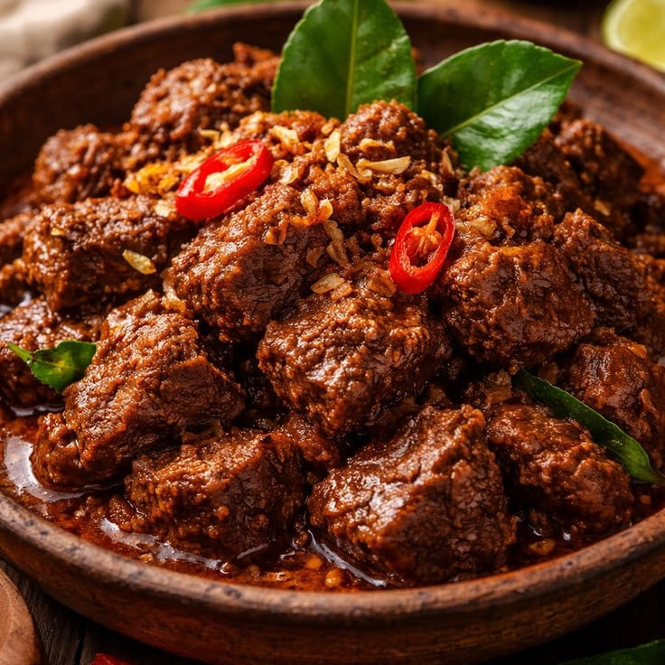
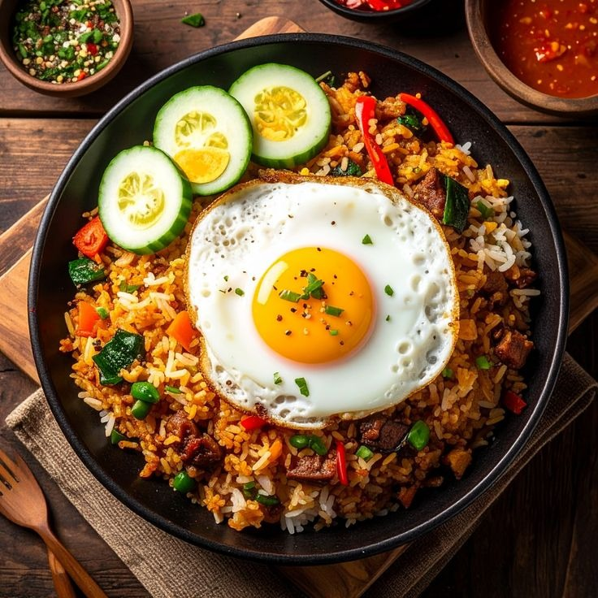
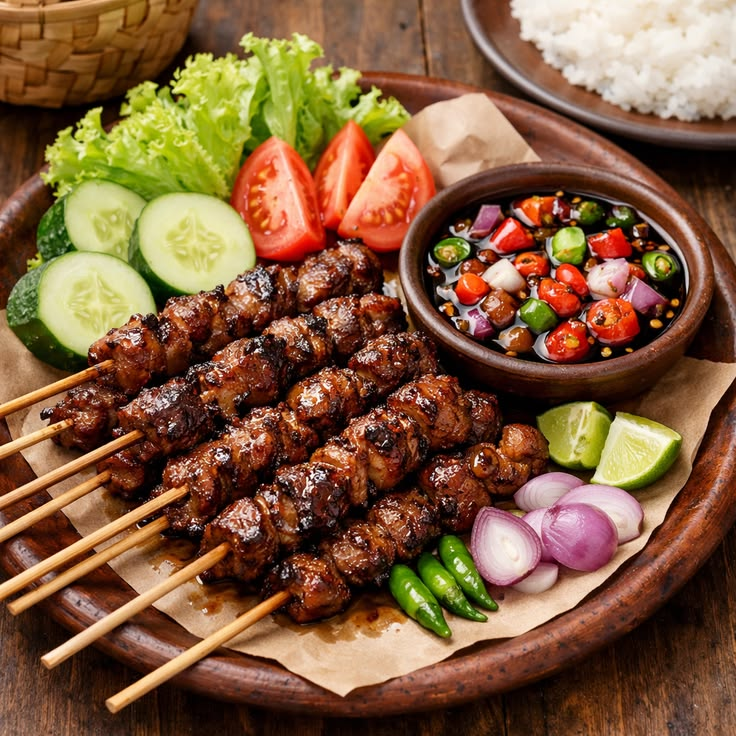
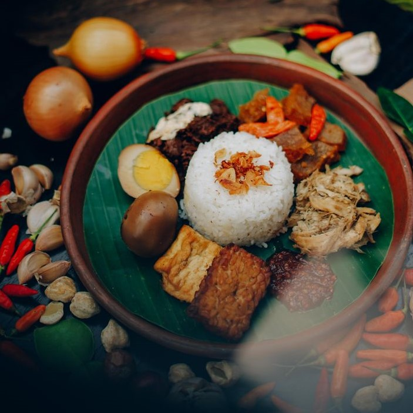
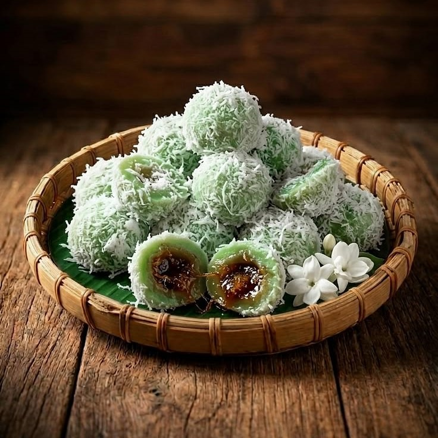
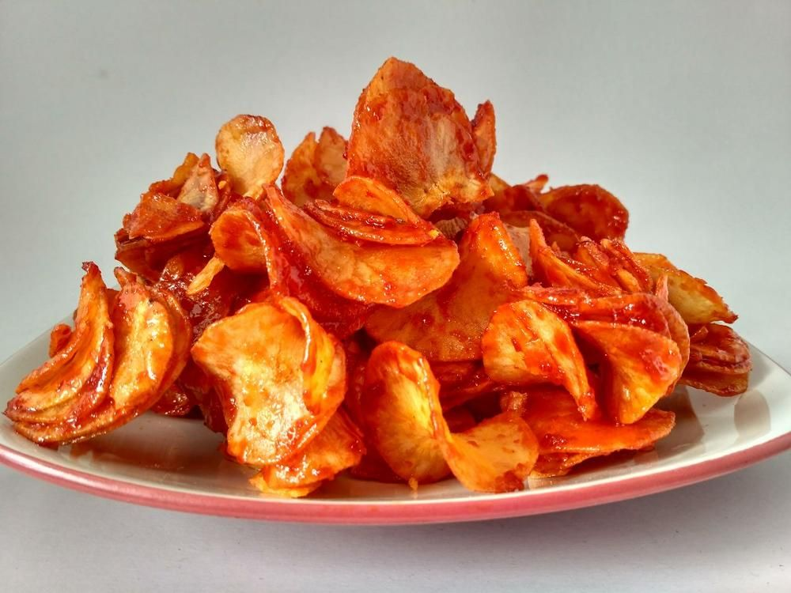
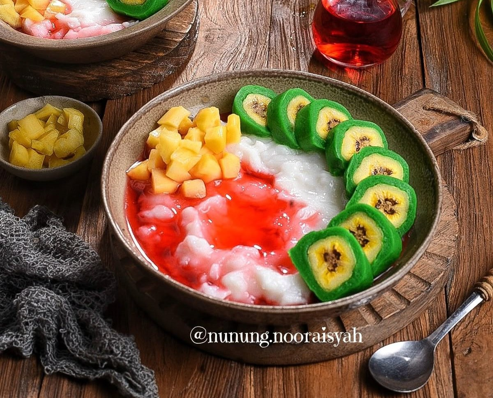

Daftar Resep Nusantara

Rendang
Bahan-bahan
- 500 gr daging sapi
- 1 liter santan
- 5 siung bawang merah
- 3 siung bawang putih
- Cabai merah
- Lengkuas
Cara Memasak
- Haluskan bumbu.
- Masak santan bersama bumbu.
- Masukkan daging.
- Aduk hingga mengering.
Tips Memasak
Masak dengan api kecil agar bumbu meresap sempurna.

Nasi Goreng Jawa
Bahan-bahan
- Nasi putih
- Bawang merah
- Bawang putih
- Kecap manis
- Telur
Cara Memasak
- Tumis bumbu.
- Masukkan telur.
- Tambahkan nasi.
- Masukkan kecap.
Tips Memasak
Gunakan nasi dingin agar tidak lembek.

Sate Ayam Madura
Bahan-bahan
- 500 gr daging ayam fillet
- 15 tusuk sate
- 3 siung bawang putih
- 5 siung bawang merah
- 2 butir kemiri
- 1 sdm ketumbar
- 2 sdm kecap manis
Cara Memasak
- Haluskan bumbu marinasi.
- Lumuri ayam dan diamkan 30 menit.
- Tusuk ayam ke tusuk sate.
- Buat bumbu kacang.
- Bakar sate hingga matang.
Tips Memasak
Oles sate dengan kecap saat dibakar agar lebih juicy dan harum.

Gudeg Jogja
Bahan-bahan
- 500 gr nangka muda
- 500 ml santan
- 200 gr ayam / telur rebus
- 3 lembar daun salam
- 2 cm lengkuas
- 100 gr gula merah
- Garam secukupnya
- 5 bawang merah
- 3 bawang putih
- 3 butir kemiri
- 1 sdt ketumbar
Cara Memasak
- Haluskan bumbu lalu tumis hingga harum.
- Masukkan nangka muda, daun salam, dan lengkuas.
- Tuang santan, tambahkan gula merah dan garam.
- Masak dengan api kecil hingga empuk.
- Tambahkan ayam atau telur, masak hingga kuah menyusut.
- Gudeg siap disajikan.
Tips Memasak
Gunakan nangka muda segar, masak dengan api kecil, dan jangan terlalu sering diaduk agar gudeg tetap utuh dan lezat.

Klepon Lumer
Bahan-bahan
- 250 gr tepung ketan
- 200 ml air hangat
- Pewarna hijau / air pandan
- 100 gr gula merah
- 100 gr kelapa parut
- ½ sdt garam
Cara Membuat
- Campur tepung ketan dengan air hangat dan pewarna hijau.
- Ambil adonan, pipihkan lalu isi gula merah.
- Bulatkan hingga tertutup rapat.
- Rebus sampai klepon mengapung.
- Gulingkan ke kelapa parut.
- Klepon lumer siap disajikan.
Tips Membuat
Gunakan air pandan agar harum, tutup adonan rapat, dan rebus hingga klepon mengapung agar hasilnya sempurna.

Keripik Singkong Balado
Bahan-bahan
- 500 gr singkong
- Minyak goreng secukupnya
- 5 buah cabai merah
- 3 siung bawang putih
- 4 siung bawang merah
- 2 sdm gula pasir
- 1 sdm gula merah
- ½ sdt garam
Cara Membuat
- Kupas dan iris tipis singkong, lalu rendam air garam.
- Goreng hingga kering dan renyah.
- Haluskan lalu tumis bumbu balado.
- Tambahkan gula, garam, dan sedikit air.
- Masukkan keripik, aduk hingga rata.
- Dinginkan lalu simpan.
Tips Membuat
Iris singkong tipis, goreng hingga benar-benar renyah, dan simpan di wadah tertutup agar tetap kriuk.

Es Pisang Ijo
Bahan-bahan
- 4 buah pisang raja matang
- 250 gr tepung beras
- 50 gr tepung terigu
- 500 ml santan
- 100 ml air pandan / pewarna hijau
- 100 gr gula pasir
- ½ sdt garam
- Sirup merah dan es batu secukupnya
Cara Membuat
- Campur bahan adonan lalu masak hingga mengental.
- Bungkus pisang dengan adonan hijau.
- Kukus selama 15–20 menit lalu dinginkan.
- Buat saus vla hingga mengental.
- Potong pisang ijo, siram saus vla.
- Tambahkan sirup merah dan es batu.
Tips Membuat
Gunakan pisang raja matang, bungkus adonan tipis merata, dan sajikan dingin agar lebih nikmat.